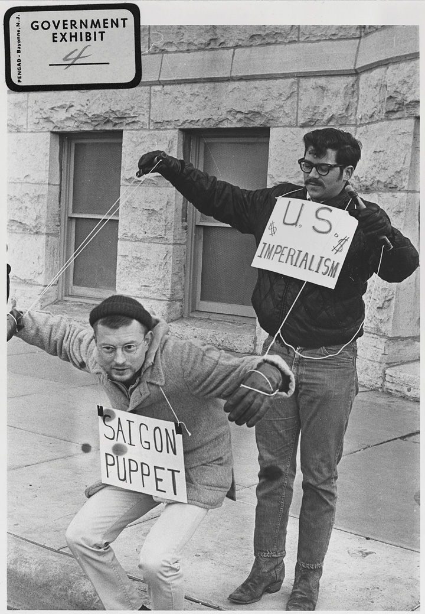
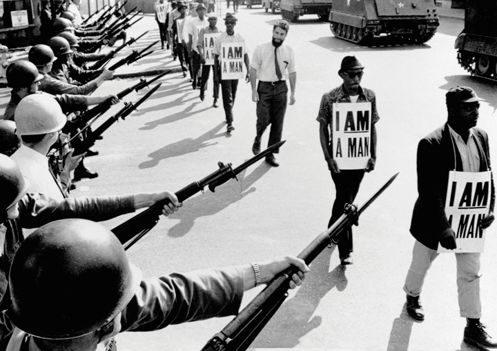
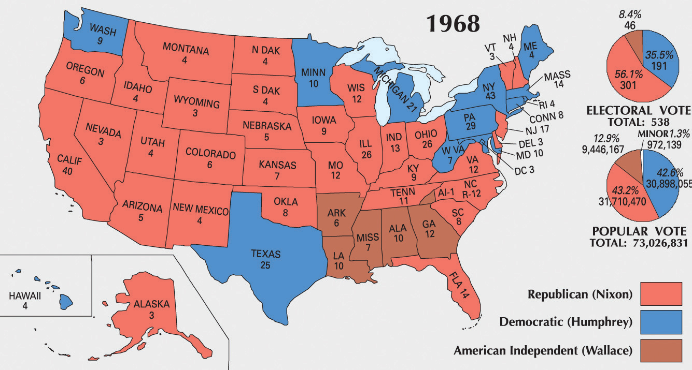
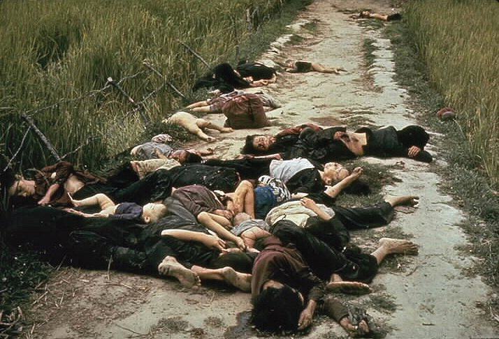

The year 1968 was a year unlike any other. Beginning with a massive offensive US officials had assured themselves could not happen and ending with the polarization of the US public on a host of issues from Hanoi to Harlem, 1968 was a year of disruption. Women held protests against the paternalism of marriage ceremonies where a father “gave” a bride to another man and likened beauty pageants to judging livestock at a county fair. Students held protests on nearly every major campus in the United States, presenting their views on race, the war, the environment, and nearly every leading social issue. Remembered for both violence and drama, these US protests often paled in comparison to the protests on college campuses throughout the world. Students in Mexico were slaughtered en masse for their protests leading up to the Mexico City Olympics, while workers and students in Paris took to barricades and utilized the rhetoric of the French Revolution to demand broad change. A democratic revolution led by students in Czechoslovakia was crushed by the Soviet Union. In America, a second wave of assassinations and riots angered and polarized the nation, and a new president who alienated many voters and garnered only 43 percent of the vote took office under a promise to bring Americans together.
Given the tendency for US troops to control a village one day and then abandon it to the VC by nightfall, the people of Vietnam found that pretending to support both sides was an important survival tactic. The failure of the VC to recognize the limits of their popular support led to their greatest military defeat during the Tet Offensive. All sides had agreed to a week-long ceasefire in observation of the Tet holiday celebrating the lunar New Year. However, on the early morning of January 30, 1968, the Vietcong attacked over one hundred cities and military bases throughout South Vietnam. For a few hours, a small group of guerilla warriors gained control of the US embassy in Saigon. The VC was also able to take control of a handful of military outposts throughout the countryside. However, by the end of the day, nearly half of the estimated 80,000 VC who participated in the Tet Offensive had been killed, captured, or wounded; many were mowed down by automatic weapons after making suicidal runs against fixed US positions.
Figure 11.20

This battle map shows the location of major VC and NVA offensives throughout Vietnam during the Tet Offensive. The attacks demonstrated that contrary to the public statements of the military and the president, US forces had not pushed the VC and NVA to the brink of collapse.
The attack surprised the US military, less because of the timing of the attack during the Tet holiday (a similar attack had been launched years before against the French and rumors of a similar attack were rampant) but because a massive offensive against United States and South Vietnamese bases was both contrary to the Fabian tactics used by the VC and NVA and assumed to be beyond the battlefield capacity of these forces. Until this time, Communist forces avoided pitched battles in favor of hit-and-run attacks. For example, US patrols made daily sweeps of the Vietnamese countryside in search of the VC who generally avoided direct confrontations they knew they could not win. The change in tactic puzzled US commanders, some of whom nonetheless celebrated their apparent tactical victory.
The attack also stunned Americans back home who had been told that the VC was near collapse. This apparent gap between what the public was told about the war in Vietnam and the actual situation led to increased scrutiny and criticism by US civilians regarding the war. However, the main reason the VC changed its strategy was not to convince US civilians that their government had overestimated its success or that the Vietnam War was unwinnable. Instead, the VC believed that the people of Vietnam would take up arms and join them in their attack against the South Vietnamese government and overwhelm US forces. The VC failed to recognize that the majority of South Vietnamese simply wanted the war to end.
Although the Tet Offensive failed to rally popular support among the residents of South Vietnam, the massive offensive demonstrated the bankruptcy of the US military’s claims that the VC had largely been eliminated. In addition, television coverage showing the carnage and the cruelty of South Vietnamese leaders who executed prisoners led many Americans to call for an immediate withdrawal of US troops. As a result, Tet was both a tactical defeat and a strategic victory for the VC. It resulted in a short-term setback in the Vietcong’s ability to counter US forces, but eventually led many Americans to question their nation’s presence in Vietnam and led to the eventual decision of President Johnson to try to end the war. Just one month after Tet, a majority of Americans reported their belief that intervention in Vietnam had been a mistake.
On March 31, 1968, President Johnson addressed the nation and announced that he was beginning negotiations with North Vietnam to end the war. He announced an end to aerial attacks on the North, pledged continued military and humanitarian assistance to the South, and intimated his hope that US troops would soon be coming home. Johnson then announced that, to make sure politics stayed out of the peace process, he would neither seek nor accept the nomination of his party for president in the upcoming election.
A shock to many, Johnson’s announcement that he would not run for reelection was an acknowledgement of what many believed was inevitable given his low approval ratings. These ratings improved following his announcement, and many viewed his pledge to negotiate an end to the war without political pressure as genuine. However, by this time, Johnson had already lost the support of many Americans, and his military leaders were increasingly losing the support of their troops. Hundreds of “fraggings”—incidents where enlisted men attempted to assassinate their officers using weapons such as grenades—occurred throughout the year. The soldiers who committed these actions were not representative of the majority of troops who followed orders. At the same time, the fraggings demonstrated the tendency of troops to question their orders and even retaliate against commanders they believed unnecessarily risked the lives of their fellow soldiers. Groups such as Vietnam Veterans Against the WarAn antiwar organization formed by veterans in 1967 in opposition to America’s continued military operations in Vietnam. The group quickly recruited more than 20,000 members and held a number of high-profile protests, including John Kerry’s testimony to Congress detailing his experiences and the reason he and many others who had experienced combat operations in Vietnam now opposed the war. joined antiwar protests and asked Congress how they could send a young man to die fighting a war that an increasing number of soldiers and civilians began to view as a mistake.
Figure 11.21
A protest against the Vietnam War in Wichita, Kansas, depicts the government of South Vietnam as a pawn of the United States and an instrument of imperialism.
By 1968, a majority of Americans questioned the assumption that the Vietnam War was being fought to preserve the freedoms of the people of Vietnam. Others were beginning to question the importance of Vietnam in the global fight against Communism. By the mid-1960s, there was virtually no cooperation between the Chinese and the Soviets in Vietnam, and total aid to North Vietnam from Communist nations remained negligible, especially when compared to the aid that the United States provided to the South. After 1968, the Soviet Union and China dedicated at least as much effort to combating each other as they did confronting the West. Given the common border between the two nations and a few minor skirmishes in 1969, many predicted that the Chinese and Soviets might engage one another in a deadly war that might destroy Communism. However, US officials still chose to present international Communism as a united front. Although many Americans had paid little attention to the growing rift between China and the Soviet Union, by 1969, the government’s insistence that international Communism was a monolithic threat harmed its credibility as more and more Americans became increasingly aware of world affairs.
Still, many Americans continued to support the war because they believed it was crucial to maintaining America’s credibility throughout the world. After making so many pronouncements about the importance of fighting Communism and after insisting that Vietnam was the frontline of American freedom, withdrawal from Southeast Asia appeared to many as an admission of US weakness. In addition, withdrawal would seem to indicate that US servicemen and women had fought and died for no reason. After years of presenting each increase in troops and escalation in Vietnam as vital to the defense of the nation, many Americans were understandably reticent to simply reverse course. In addition to the political consequences, people inside the Johnson administration wondered what might happen to the nation’s already beleaguered morale if they now admitted that they had long maintained reservations about the wisdom of US intervention in Vietnam. Any admission that the administration had at least partially based its decision to escalate the war on political calculations would surely tear the nation apart, they worried. Even worse would be if it ever came to light that many of the war’s decisions were based on the deliberate miscalculations of military advisers who kept promising that victory was inevitable.
Toward the end of 1968, these political consequences were no longer as relevant as Nixon prepared to take office. The outgoing President Johnson began negotiations with the North Vietnamese and prepared the public for the eventual news that US intervention in Vietnam had done little more than maintain a violent status quo. Johnson still hoped that US aid would allow South Vietnam to continue the fight, but made it clear that US forces should be withdrawn. Publicly, Nixon applauded these decisions and made ending the war a leading issue of his presidential candidacy. Privately, however, Nixon still believed the North could be defeated and sought to be the president who turned the war around. As a result, once he won the 1968 election, he secretly derailed Johnson’s peace talks by sending messages to the North Vietnamese counseling them to wait until he was president before signing any armistice.
In the fall of 1967, Martin Luther King addressed the annual meeting of the SCLC and announced that he would “dramatize the whole economic problem of the poor” through a new kind of class-based rather than race-based campaign. The ambitious goal of what would soon become the Poor People’s CampaignAn antipoverty protest originated by Martin Luther King, a couple thousand poor Americans of various racial and ethnic backgrounds sought to publicize their plight and push the federal government toward more sweeping antipoverty legislation by establishing a model city run by a diverse group of low-income Americans. was to bring impoverished Americans of all races and regions to Washington, DC, to highlight the common ground between poor Americans of diverse backgrounds and pressure Congress to pass legislation that would alleviate their plight. Previous protests typically marched for a few days or engaged in boycotts or acts of civil disobedience. The organizers of the Poor People’s Campaign sought a more ambitious form of protest, attempting to build a functioning interracial community on the National Mall.
In the meantime, King traveled back and forth to Memphis in support of a sanitation worker’s strike. The city of Memphis refused to promote black workers to the position of driver and paid the sanitation workers starvation wages. The workers were also not allowed to take a long enough break for lunch that would allow them to sit down or even wash their hands after handling the city’s garbage all day. In response to their requests for moderate pay increases and more humane treatment, the mayor threatened to fire the workers. King recognized that Memphis represented a microcosm of the frustrations of black Americans and the dual discrimination of workers that blurred the lines between race and class. Not only were the workers discriminated against because they were black, they were also looked down upon because they were poor and worked in a low-status job.
The sanitation workers in Memphis recognized that they were not on strike to obtain a token raise and began wearing signs that simply read “I AM A MAN.” With just three words these workers expressed what the entire Civil Rights Movement was about. King gave the last speech of his life in recognition of their humanity. King declared that black men were no longer going to kowtow to those who treated them with indignity, grin when they were actually offended, stutter when what they wanted to say was plain, or look at the ground when something a white person did upset them. In reference to the threats to his own life, which had grown in recent weeks, King asked the crowd to keep their focus on the goals of the movement. “I may not get there with you,” King counseled, “but I want you to know tonight that we as a people will get to the Promised Land.” The next day, April 4, 1968, Martin Luther King Jr. was assassinated.
Figure 11.22
City and state officials responded to the strike of black Memphis sanitation workers by deploying soldiers with fixed bayonets. Supporters wore signs calling for better pay and an end to the practice of only promoting whites to the position of driver. Many of the workers wore signs that simply read “I Am A Man” to draw attention to the way many of their requests had been disregarded by city officials.
A lifelong advocate of nonviolence who had personally kept a number of demonstrations from denigrating into violence in his final year on Earth, King’s assassination led many to question the potential of nonviolent protest. Anger unleashed a series of riots in more than one hundred cities. Black neighborhoods in the nation’s capital burned for several days, perhaps the worst scene of destruction out of all the riots. Maryland governor and future vice president of the United States Spiro Agnew met with black leaders in neighboring Baltimore where the rioting was nearly as severe. Rather than ask their advice on how to counter the rioting, Agnew angrily lectured and even insulted these leaders who might have been able to bridge the gap between city hall and the participants. In response to the insult, black leaders walked out of the meeting with their governor and the rioting continued for several days.
White Americans unfamiliar with the long history of similar urban riots questioned why black residents would destroy “their own” neighborhoods. The answer to this loaded question can be found in the histories of many of the afflicted cities. In nearly every major city and many mining communities, workers in the late nineteenth and early twentieth centuries grew tired of peacefully protesting the conditions they faced from employers, landlords, and government, and unleashed violence against the symbols of their oppression. As had been the case with these riots, the buildings and symbols that were targeted were not random during the riots of the late 1960s; black residents singled out stores that refused to hire black workers and the property of slumlords who abused black tenants. Black-owned stores were usually spared, especially those that were known to support the community. Before long, however, fire and destruction became their own tonic as thousands reveled in the cathartic ecstasy of violence for its own sake.
Some black leaders, such as Stokely Carmichael—the civil rights veteran who had endured savage beatings without retaliating—began to question the doctrine of nonviolence. Other black leaders counseled that King’s dream must not be deferred by an assassin’s bullet. Yet by the time of the scheduled Poor People’s March in the summer of 1968, no national figure had risen to assume the mantle of leadership. Even without a strong national leader, a few thousand rural and urban blacks, Appalachian whites, inhabitants of Native American reservations, working-class Asian and Mexican Americans, and poor people of various ethnic backgrounds traveled to the National Mall and established a makeshift camp they called Resurrection City. Over the next month and a half, people of all races erected shanties on the mall and participated in various activities aimed at increasing awareness about the issue of poverty. Intending to show solidarity among the working poor irrespective of race and region, the residents of Resurrection City established their own government that provided free daycares and schools. However, news of these protests quickly descended to the back pages of newspapers before disappearing completely. By the middle of June, most of the protesters had given up and the remaining residents of Resurrection City were forced to leave by mall police, without having achieved any of their goals.
With the death of Martin Luther King, Ralph Abernathy inherited the task of leading the Poor People’s Campaign. A seasoned civil rights leader, Abernathy still lacked many of the traits that galvanized people behind King and other fallen civil rights leaders. For example, Abernathy chose to stay in a hotel and commute to Resurrection City. In fairness, few middle-class or wealthy individuals chose to support the Poor People’s Campaign by taking up residence on the mall. Even had the movement enjoyed the support of a leader such as King, the Poor People’s Campaign faced its most substantial obstacle in that it was generally ignored by the media and was greeted by indifference among most wealthy and middle-class Americans. Whereas Jim Crow was a patent violation of the principles most Americans espoused, the kinds of obstacles facing the poor were less obvious to detect and more difficult to eliminate. Previous marches demanding an end to segregation required little or no expenditures, while the residents of Resurrection City asked for millions to fund government programs. For most Americans, economic inequality was either the consequence of one’s own actions or a complex problem deeply woven into the nation’s economic structure. For some, the protesters appeared as bohemian transients who expected government handouts. For others, the persistence of poverty seemed to be an intractable problem that no antipoverty program could adequately address.
After Johnson announced that he would not seek the Democratic nomination, Vice President Hubert HumphreyA native of South Dakota, Humphrey was a long-serving Democrat representing Minnesota in the Senate with a break in service as Lyndon Johnson’s vice president. Humphrey attempted to unite Democrats under his own banner in the 1968 election but lost in a landslide to Richard Nixon. became the leading candidate for his party’s nomination. In 1968, party officials still selected the majority of candidates to national conventions, which rendered the primaries of far less significance than they would later become. In fact, Humphrey, like many past presumptive nominees, made little effort to campaign. Minnesota senator Eugene McCarthy and Massachusetts senator Robert KennedyBrother of former president John F. Kennedy, Robert Kennedy served as his brother’s attorney general and was the strongest supporter of civil rights in the administration. Elected as a senator representing New York, Kennedy ran for president and was leading in many polls when he was assassinated on June 5, 1968. were the two leading candidates in the Democratic primary, and they hoped they could garner enough grassroots support that party insiders would switch their support from Humphrey to support their candidacies in time for the Democratic National Convention. Eugene McCarthy had opposed the war long before it became politically acceptable to do so, and so he won the affection of many Democrats who believed Humphrey was too connected to LBJ’s escalation in Vietnam. Robert Kennedy likewise supported ending the war, but did so in ways that still won him the support of many who questioned the patriotism of war protesters.
Kennedy also won the support of key Democratic groups such as labor unions, most of whom had forgiven him for his aggressive tactics against the popular teamster’s leader Jimmy Hoffa. College students, women’s rights activists, and nonunion workers likewise favored Kennedy over the other choices, although McCarthy retained an extremely loyal following among the more radical students. Kennedy’s support was strongest among the growing numbers of minority voters who had all but abandoned the Republican Party. Kennedy had supported Cesar Chavez and the rights of migrant workers. He had long been popular among African American voters and was the strongest supporter of civil rights within his brother’s administration. In fact, Kennedy was one of only a handful of white politicians who African Americans still respected, as evidenced by his ability to speak to inner-city residents in Indianapolis on the night of Martin Luther King’s assassination. Bobby Kennedy had just won the primary in California, and many pundits began to believe that he could upset the presumed candidate Hubert Humphrey. However, Bobby Kennedy was assassinated on June 6, 1968.
As the Democratic National Convention approached, antiwar protesters recognized that Eugene McCarthy had little chance and converged on the host city of Chicago to express their displeasure with Humphrey and his refusal to commit to an immediate end to the war. Mayor Richard Daily welcomed the protesters as a challenge to his authority and promised that law and order would be served Chicago style. The mayor called up 6,000 National Guardsmen and more than 7,000 other troops to augment the city police force. Protesters representing major national organizations such as SDS converged with a comical group of anarchist-revolutionaries who promised to “make revolution for the hell of it” and lace the city’s water supply with LSD. While TV cameras captured Democrats fighting among themselves over who should be nominated, cameras outside the convention broadcast images of the Chicago police using force against thousands of antiwar protesters. Lost in the images was the nomination of Humphrey for president.
Figure 11.23
Richard Nixon prevailed over Hubert Humphrey and a divided Democratic Party in 1968. Key to the victory was Nixon’s support among white Southerners in the previously Democratic South. The importance of the issue of race among voters is highlighted by the third-party candidacy of segregationist candidate George Wallace.
The Republicans countered by nominating Richard Nixon. Many Republicans viewed Nixon as a moderate, especially when compared to Ronald Reagan, the preferred candidate among the party’s conservative wing. Nixon had made a name for himself once again (he had lost the presidential election in 1960 and was embarrassed by his subsequent defeat for governor of California two years later) by verbally attacking antiwar protesters. Nixon could not have picked a more opportune moment for his comeback. His campaign promise to restore law and order won the support of older voters. He also deftly appealed to Southern whites by speaking in coded terms that only liberals and minorities recognized as pandering to racism. His promise to achieve “peace with honor” in Vietnam was even more politically evasive and led many who mildly opposed the war to believe that Nixon might share some of their ideas. After all, the war had been almost entirely managed by Democrats, antiwar voters pointed out, and so only Nixon could withdraw US forces without admitting his party’s culpability in starting the war. Even the entry of the arch-segregationist and former Alabama governor George Wallace, who won five Southern states, did not derail Nixon. The former vice president prevailed easily over Humphrey’s fourteen states and assumed the presidency of a divided nation in 1969.
On July 20, 1969, Kennedy’s dream of landing a man on the moon became a reality when astronaut Neil Armstrong declared his small step from a lunar module “a giant leap for mankind.” Americans celebrated the achievement as their own and for an evening seemed to forget the myriad issues that divided them. Even NASA failed to unite the nation, and even its greatest triumph could not save its program from being slashed to provide more money for a war in Vietnam Nixon had escalated instead of ending. Nixon explained that his pledge to provide both peace and honor meant doing more to ensure that the fighting was done by South Vietnamese forces. Referring to his plan as VietnamizationNixon’s strategy of escalating aerial attacks while increasingly withdrawing US ground troops in hopes that the South Vietnamese army could eventually defeat the North Vietnamese through US military aid., Nixon gradually declined US troop levels in the country from 500,000 to 25,000.
Nixon also ended the draft, a decision he denied had any relation to the continuing antiwar movement until revealing in his memoirs that it had everything to do with the protests. Nixon also escalated the number of bombing missions over North Vietnam and even more free-fire zones in the South. He also launched secret bombing campaigns meant to destroy Communist supply networks in Laos and Cambodia, something the Nixon administration vehemently denied until details of the attacks were leaked to the press. Protests against the war escalated as well, and military discipline became a contradiction in terms as tens of thousands of soldiers went absent without leave (AWOL). The nation was so divided that even antiwar protesters attacked one another and the members of SDS disintegrated over internal conflicts by 1970.
“I call it the madman theory,” Nixon explained to a trusted aid in regard to his decision to escalate the war into Laos and Cambodia. “I want the North Vietnamese to believe I’ve reached the point where I might do anything to stop the war. We’ll just slip the word to them that ‘for God’s sake, you know Nixon is obsessed about Communists. We can’t restrain him when he’s angry—and he has his hand on the nuclear button…’–and Ho Chi Minh himself will be in Paris in two days begging for peace.”
In November 1969, news of the Mai Lai MassacreAccording to many veterans, Mai Lai was one of many instances where battle fatigue, the difficulty to distinguish between noncombatants and the Vietcong, and poor military discipline led to a massacre of between three hundred and five hundred villagers by US ground forces. The tragedy in the village of Mai Lai became public information in 1969 and strengthened the antiwar movement. was reported by the US press. One of many atrocities committed by both sides against the Vietnamese people, Mai Lai demonstrated the inhumanity of the war and drove many former supporters of the war to reconsider their position. In March 1968, infantrymen in a unit dubbed Charlie Company had faced constant attack from civilians and VC to the point where it was nearly impossible to distinguish between the two. The unit was advised that the village of Mai Lai was a VC stronghold and that all civilians present at that particular moment were either supplying the VC or the kind of civilian guerillas that had been inflicting casualties on US forces like those that had killed their brothers in arms.
After raiding the village, the military discipline of the unit evaporated. The villagers were ordered to line up before being shot one by one by eighteen-year-old men, many of them crying as they fired each round. Others were ordered in a ditch while troops threw grenades into the human pile. “People were diving on top of each other,” recalled one GI, describing how mothers tried in vain to shield their children from the deadly shrapnel. Another GI described how a member of Charlie Company distributed candy to the children, then broke down in tears and shot them.
Figure 11.24 Mai Lai Massacre
The military had investigated the incident, which they conceded led to the death of more than three hundred people, most of whom were innocent civilians. The military made some attempts to prevent future occurrences but decided to cover up the incident until US troops began circulating letters and even photos of the massacre. News of the event led to a public trial and conviction of the unit’s lowest-ranking officer, who had ordered the men to fire on the civilians. The conviction of Lieutenant William Calley polarized many Americans. Sentenced to life in prison, some believed that he was a callous murderer and should have been executed. Others pointed out that Calley had been ordered to kill any suspected VC—an impossible order that had led to dozens of similar massacres. For these Americans, Calley was being unfairly singled out for a much larger crime perpetrated by thousands of higher-ranking officers who glorified in body counts. Still others saw Mai Lai as an indictment of a war that placed eighteen-year-old men in a no-win situation. Hundreds of returning veterans shared their own stories and testified that brutality was the price of self-preservation, and callousness and even insanity a place of refuge from moral accountability for their actions. For others, morphine and other drugs provided a welcome release from reality.